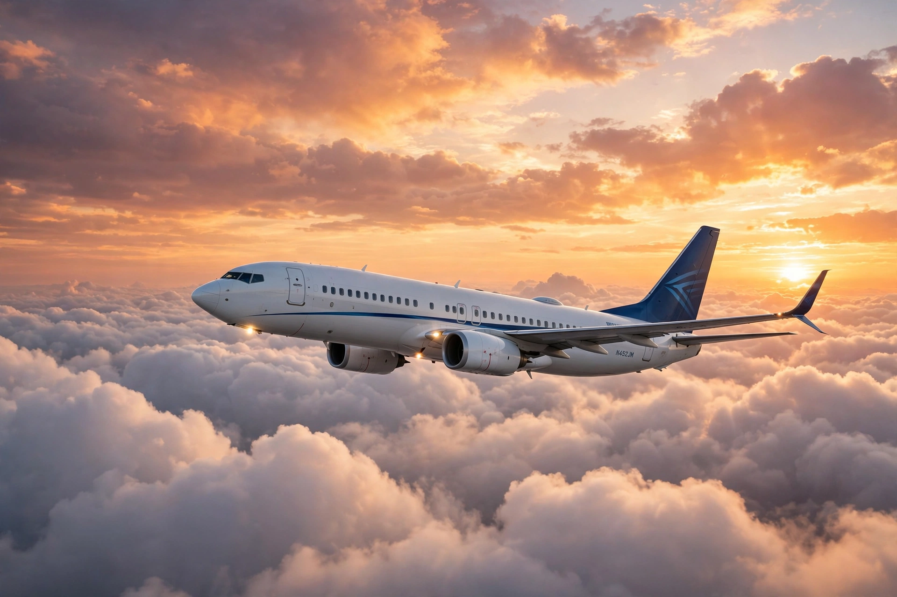

Aircraft
| Types | Aeroplanes, helicopters, gliders, airships, balloons |
|---|---|
| First powered flight | 17 December 1903 (Wright brothers) |
| Lift | Aerodynamic lift or buoyancy |

[Image: a modern twin-engine jet airliner in flight above clouds at sunset]An aircraft is a vehicle that is able to fly by gaining support from the air. It counters the force of gravity by using either static lift (as in balloons and airships) or the dynamic lift of an airfoil (aeroplanes and helicopters), or, in a few cases, direct thrust from its engines. Most aircraft are flown by a pilot on board, though some are remotely piloted or autonomous.
Aircraft are classified in many ways: fixed-wing aeroplanes, rotary-wing helicopters, gliders, airships and balloons; and by use — commercial airliners, military fighters and transports, general-aviation light aircraft, and unmanned aerial vehicles (drones).
History
Human flight began with kites and balloons: the Montgolfier brothers' hot-air balloon carried the first human passengers in 1783. Glider pioneers such as Otto Lilienthal developed the science of lift in the 1890s, and on 17 December 1903 the Wright brothers made the first powered, controlled aeroplane flight at Kitty Hawk, North Carolina.
Aircraft developed rapidly through both world wars, and the jet engine — developed independently by Frank Whittle and Hans von Ohain — transformed aviation after the Second World War, leading to the jet airliner era opened by the de Havilland Comet (1952) and the Boeing 707.
How aircraft fly
A fixed-wing aircraft generates lift as air flows over its wings; thrust from propellers or jet engines overcomes drag, and control surfaces (ailerons, elevators and rudder) control roll, pitch and yaw. Helicopters generate lift and thrust with rotating blades and can hover and take off vertically.
Aviation is regulated internationally through bodies such as the International Civil Aviation Organization, and aircraft are central to modern transport, carrying billions of passengers a year before the COVID-19 pandemic and recovering strongly since.